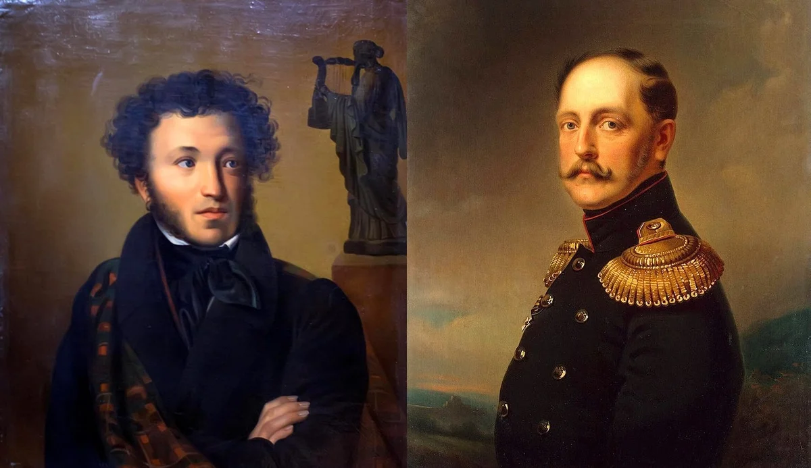
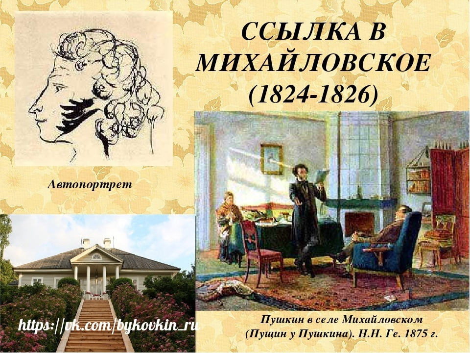
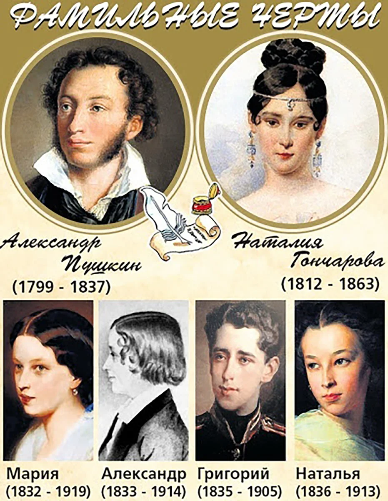

Александр Сергеевич Пушкин 26 мая (6 июня) 1799-29 января (10 февраля) 1837

Дество
Александр Пушкин родился в обедневшей дворянской семье 6 июня 1799 года. В раннем детстве он был молчаливым и малоподвижным ребенком — старшая сестра Ольга вспоминала, что до шести лет мальчик «был просто увалень». Начальное образование Пушкин получил дома. Воспитание его ничем не отличалось от общепринятой тогда в дворянских семьях системы: родители нанимали ему гувернеров и учителей из Франции, Германии, Англии, России.

Учеба давалась Пушкину тяжело, а преподаватели отмечали, что он не прилежен. Однако вскоре мальчик увлекся чтением. «Проводил бессонные ночи и тайком в кабинете отца пожирал книги одну за другой», — вспоминал позже его младший брат Лев.Любовь к чтению переросла в попытки создавать собственные тексты. Уже в семь лет Пушкин сочинял на французском языке маленькие комедии, подражая Мольеру. Позже, прочитав произведения Лафонтена, юный автор захотел писать басни. А ознакомившись с «Генриадой» Вольтера, Пушкин задумал поэму в шести песнях: все прочитанные книги вдохновляли начинающего автора.
«Француз» в Царскосельском лицее

В 1811 году родители Пушкина решили отдать сына в Иезуитский коллегиум, но их планы изменились, когда в Царском Селе открылся лицей для дворянских детей. По протекции друзей Пушкины устроили 12-летнего сына в элитное заведение. Изначально здесь собирались готовить детей из императорской семьи и их сверстников к высшим гражданским чинам. Но статус Лицея понизился: Пушкин учился в привилегированном и закрытом учреждении, но среди равных себе детей из обедневших фамилий. В стенах Лицея многие крепко сдружились. Три товарища — Иван Пущин, Антон Дельвиг, Вильгельм Кюхельбекер — остались друзьями Пушкина на всю жизнь. Учился Пушкин не очень хорошо, особенно тяжело юному писателю давались логика и математика. При блестящей памяти ему недоставало усидчивости и внимания. Однако преподаватели отмечали эрудицию воспитанника. В Лицее он продолжал много читать и писать тексты на французском языке. Лицеист Сергей Комовский вспоминал, что из-за любви к этому языку Пушкина «называли… в насмешку французом, а по физиономии и некоторым привычкам обезьяною и даже смесью обезьяны с тигром». На русском языке Александр Пушкин составлял небольшие эпиграммы и послания, а также намечал структуру будущей автобиографии. Юного автора настолько увлекало литературное творчество, что идеи произведений рождались одна за другой на несколько месяцев вперед: «Вчера написал я третью главу «Фатама, или Разум человеческий». Начал я комедию — не знаю, кончу ли ее. Третьего дня хотел я написать ироическую поэму «Игорь и Ольга». Летом напишу я «Картину Царского Села»». Писал Пушкин и стихотворения. В 1814 году он впервые опубликовал одно из них — «К другу-стихотворцу» — под псевдонимом Александр Н.к.ш.п. в журнале «Вестник Европы». Первый крупный успех ждал Пушкина в 1815 году во время зимнего переводного экзамена — 15-летний лицеист прочитал свое стихотворение «Воспоминания в Царском Селе». На экзамене присутствовал Гавриил Державин, он был потрясен творением юного поэта. Пушкин позже писал: «Не помню, как я кончил свое чтение; не помню, куда убежал. Державин был в восхищении; он меня требовал, хотел меня обнять… Меня искали, но не нашли».
Служба и карьера Пушкина
В 1817 году Александр Пушкин окончил Лицей. По успеваемости он был 24-м из 29 выпускников. Пушкина направили в Коллегию иностранных дел — чиновником X класса. Но там он только числился: государственная служба мало привлекала юношу. После шести лет учебы Пушкин с головой окунулся в светскую жизнь столицы и, как известный и заслуженный автор, попал в общество петербургских писателей. Еще в Лицее он стал членом литературного кружка «Арзамас», который боролся с архаическими языковыми традициями. В 1819 году Пушкин вступил в литературно-театральное общество «Зеленая лампа» при декабристском «Союзе благоденствия». Его участники пропагандировали свободолюбивые идеи. На собраниях читали стихи, обсуждали театральные премьеры, критиковали публицистические статьи. Здесь велись не только светские споры, но и политические беседы. Все это отразилось на творчестве Пушкина: он написал несколько эпиграмм на государственных деятелей того времени, оду «Вольность», стихотворения «К Чаадаеву» и «Деревня». Острые политические произведения навлекли гнев Александра I, и император решил сослать Пушкина в Сибирь или в Соловецкий монастырь. Однако за поэта заступился Николай Карамзин: по службе Пушкина перевели из столицы на Юг. Перед отъездом, в 1820 году, Александр Пушкин закончил поэму «Руслан и Людмила». Василий Жуковский очень высоко оценил это произведение и подарил поэту свой портрет с подписью «Победителю ученику от побежденного учителя».
Южная ссылка
Политическая лирика Пушкина 1817—1820 гг. («Вольность», «К Чаадаеву», «Деревня») вызвали гнев Александра I, и Александр Сергеевич мог быть сослан в Сибирь. Только благодаря стараниям и влиянию Карамзина, Жуковского и Крылова ссылки в Сибирь удалось избежать. Так, в мае 1820 г. Пушкин под видом служебного перемещения выслан на юг России. Во время южной ссылки Пушкин очень увлекся творчеством Байрона.В одном из своих писем Пушкин иронически отозвался о религии. Письмо перехватили и донесли Александру I. Результатом стало увольнение Пушкина со службы и его вторая ссылка, в село Михайловское (1824—1826).
Личная жизнь
В 1830 году Пушкин сватается к Наталье Гончаровой, а 18 февраля (2 марта по старому стилю) 1831 года Пушкин и Гончарова венчаются в Москве. Весной молодожены переезжают в Царское Село, где снимают дачу. В 1836 году в семье было уже четыре ребенка
Последние годы жизни
Важно отметить такой момент в биографии Пушкина: после повышения в чин камер-юнкера, Александр Пушкин принимает решение покинуть службу и подает в отставку. Положение поэта выглядит и вовсе бедственно, поскольку многие произведения Пушкина не допускаются к печати из-за цензуры (например, поэма «Медный всадник»). В 1834 году Пушкин дописывает повесть «Пиковая дама», которую немедленно отсылает в журнал «Библиотека для чтения». За повесть он получает высокий гонорар, но решить финансовые вопросы так и не удается. В 1836 году Александр Сергеевич Пушкин решает издавать журнал «Современник». Однако популярностью у публики журнал не пользуется. В четвёртом томе этого журнала был впервые напечатан исторический роман «Капитанская дочка». В 1837 году между Александром Сергеевичем Пушкиным и Жоржем Дантесом возник конфликт. Пушкин вызывает Дантеса на дуэль, и в результате получает смертельное ранение в живот. Император Николай I, зная о тяжелом состоянии поэта, обещает обеспечить достатком семью и выплатить все долги. Впоследствии монарх выполнил все обещания. Умер поэт 29 января (10 февраля) 1837 года.